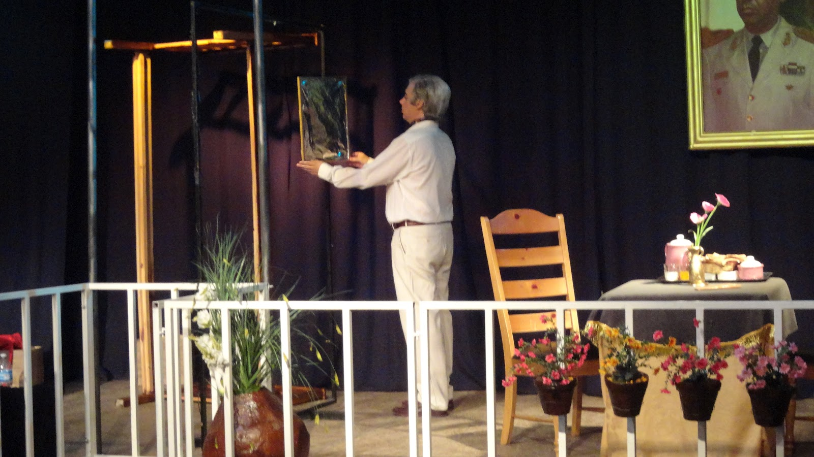
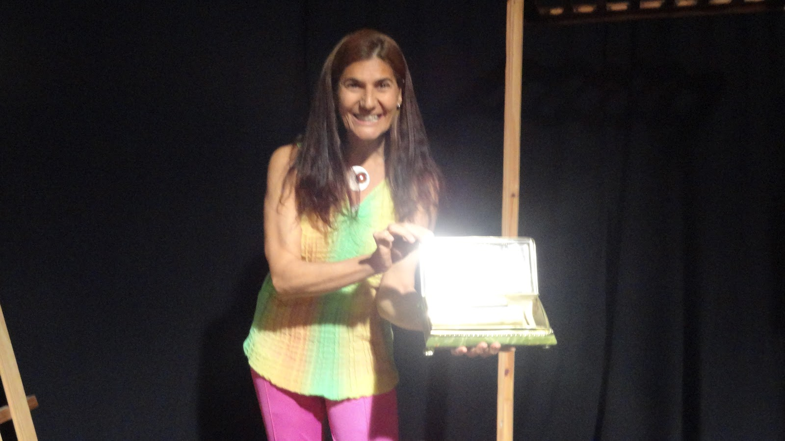
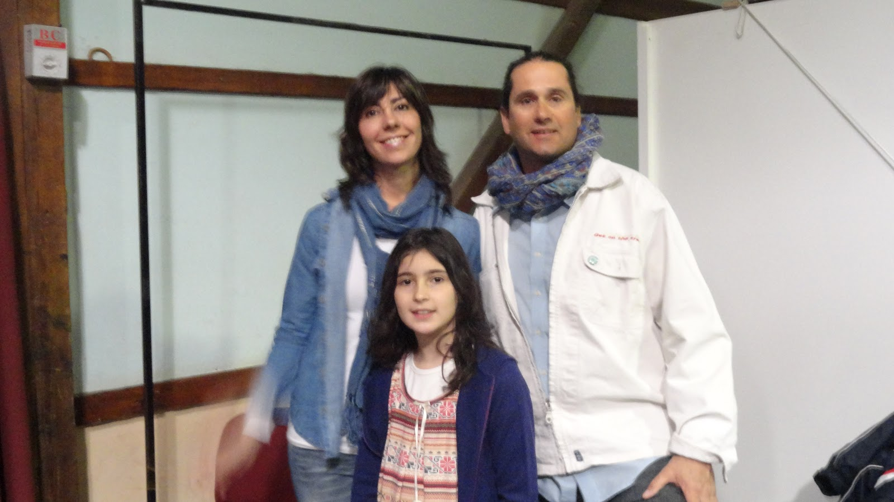
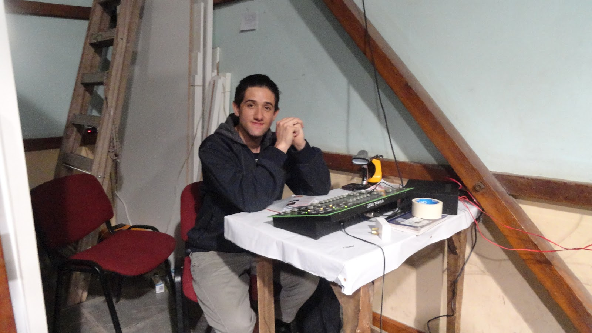
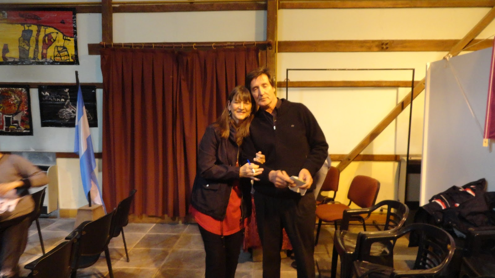
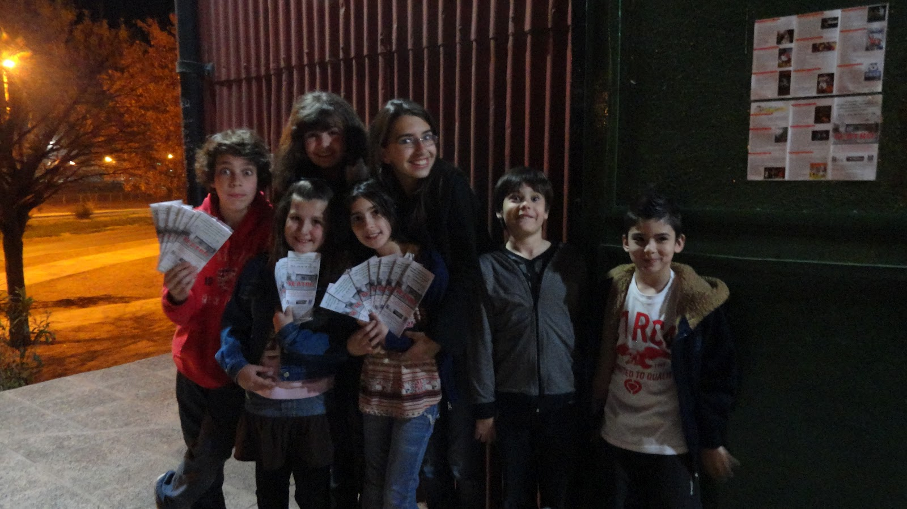
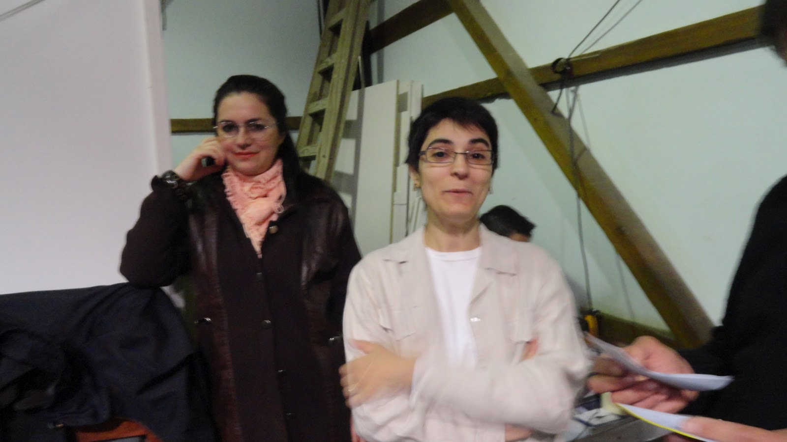
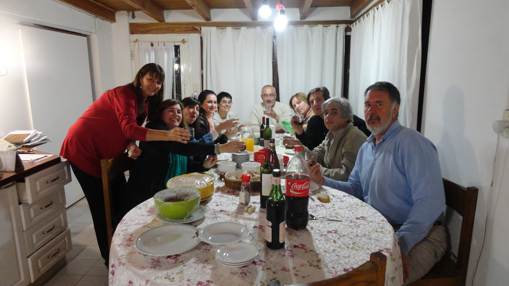
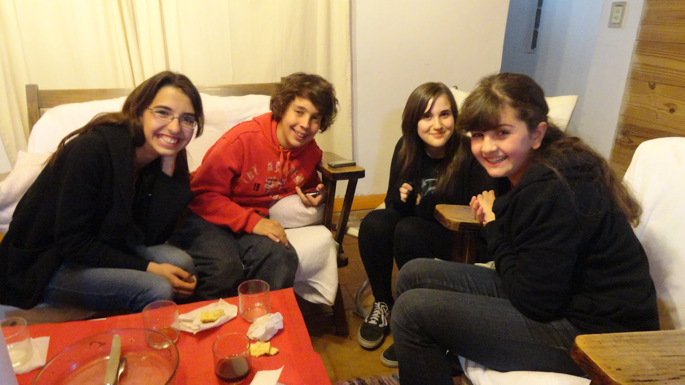
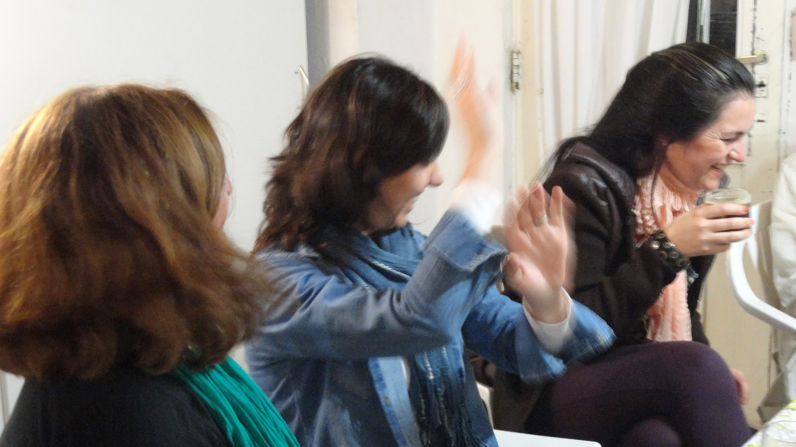

FUNCIÓN de "Amor al Aire Libre" 8 de Septiembre de 2012
Pasaje El Molino
Plottier va al Teatro
Asu
Asu
Julia
Julia
Asu y Guillermina
Nor

Nor
Julia

Sandra, Javier y Lucía

Fernando en la consola

Daniel y Guillermina
Nelly y Cay

Junitos y Programas

Silvana y Carol

Tercer Acto

Tercer Acto

Tercer Acto
